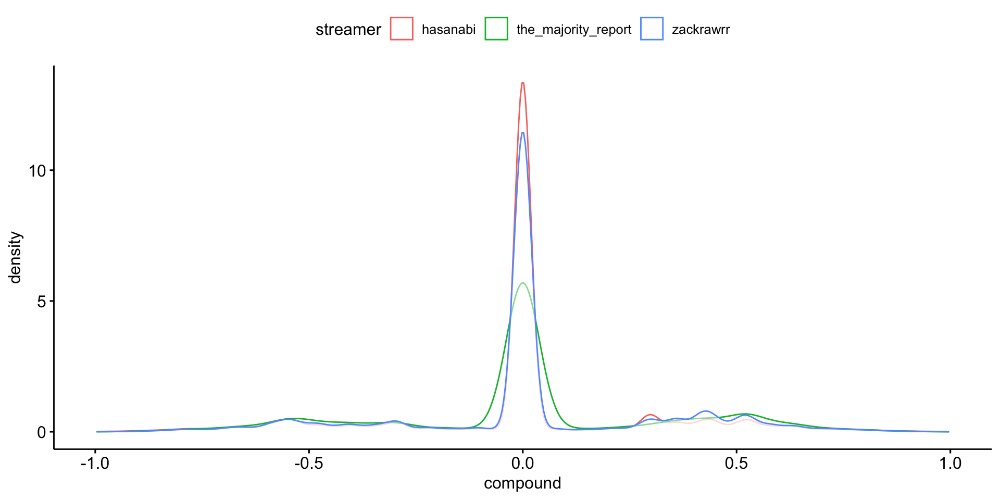

| Session | Datum | Topic | Presenter |
|---|---|---|---|
| 📂 Block 1 | Introduction | ||
| 1 | 23.10.2024 | Kick-Off | Christoph Adrian |
| 2 | 30.10.2024 | DBD: Overview & Introduction | Christoph Adrian |
| 3 | 06.11.2024 | 🔨 Introduction to working with R | Christoph Adrian |
| 📂 Block 2 | Theoretical Background: Twitch & TV Election Debates | ||
| 4 | 13.11.2024 | 📚 Twitch-Nutzung im Fokus | Student groups |
| 5 | 20.11.2024 | 📚 (Wirkungs-)Effekte von Twitch & TV-Debatten | Student groups |
| 6 | 27.11.2024 | 📚 Politische Debatten & Social Media | Student groups |
| 📂 Block 3 | Method: Natural Language Processing | ||
| 7 | 04.12.2024 | 🔨 Text as data I: Introduction | Christoph Adrian |
| 8 | 11.12.2024 | 🔨 Text as data II: Advanced Methods | Christoph Adrian |
| 9 | 18.12.2024 | 🔨 Advanced Method I: Topic Modeling | Christoph Adrian |
| No lecture | 🎄Christmas Break | ||
| 10 | 08.01.2025 | 🔨 Advanced Method II: Machine Learning | Christoph Adrian |
| 📂 Block 4 | Project Work | ||
| 11 | 15.01.2025 | 🔨 Project work | Student groups |
| 12 | 22.01.2025 | 🔨 Project work | Student groups |
| 13 | 29.01.2025 | 📊 Project Presentation I | Student groups (TBD) |
| 14 | 05.02.2025 | 📊 Project Presentation & 🏁 Evaluation | Studentds (TBD) & Christoph Adrian |
🔨 Sentiment Analysis
Session 10
08.01.2025
Seminarplan
Agenda
Dictionary-basierte Ansätze
LSD15, AFINN, VADER & Co.
Kurze Rekapitulation
Grundidee & verschiedene Umsetzungsmöglichkeiten einer Sentimentanalyse
Anwendung von Natural Language Processing (NLP), Textanalyse und Computational Linguistics, um subjektive Informationen aus Texten zu extrahieren bzw. Meinung, Einstellung oder Emotionen zu bestimmten Themen oder Entitäten zu bestimmen
Verschiede Methoden:
- Regelbasierte Ansätze (Dictionaries)
- Maschinelles Lernen & Deep Learning
- LLMs (& KI)
Ein Spektrum an Möglichkeiten
Beispiele für verschiedene Dictionaries & Pakete zur Umsetzung einer Sentimentanalyse
Definition eines eigenen, “organischen” Dictionaries vs. Off-the-shelf, wie z.B.
- Lexicoder Sentiment Dictionary (Young & Soroka, 2012) ➜ Das Wörterbuch besteht aus 2.858 “negativen” und 1.709 “positiven” Sentiment-Wörtern sowie 2.860 und 1.721 Negationen von negativen bzw. positiven Wörtern.
- AFINN (Nielsen, 2011) ➜ Bewertung von Wörtern mit Sentiment-Werten von -5 (negativ) bis +5 (positiv)
- Valence Aware Dictionary and sEntiment Reasoner (Hutto & Gilbert, 2014) ➜ Sentiment-Tool, dass zusätzlich den Kontext der Wörter mit berücksichtigt und einen Score zwischen -1 (negativ) und +1 (positiv) berechnet
Praktische Umsetzung mit
quanteda(v4.1.0, Benoit et al., 2018) bzw.quanteda.sentiment[v0.31] odervader[v0.2.1, Roehrick (n.d.)]
Erweiterung des quantedaverse
Vorstellung von quanteda.sentiment bzw. enthaltenen Funktionen & Diktionäre
quanteda.sentiment erweitert das quanteda Paket um Funktionen zur Berechnung von Sentiment in Texten. Es bietet zwei Hauptfunktionen:
textstat_polarity()➜ Sentiment basierend auf positiven und negativen Wörtern (z.B. mit Lexicoder Sentiment Dictionary).
Beispiel in Bezug auf politische Diskussionen: „War der Ton der Diskussion positiv oder negativ?“textstat_valence()➜ Sentiment als Durchschnitt der Valenzwerte der Wörter in einem Dokument (z.B. AFINN).
Beispiel in Bezug auf politische Diskussionen: „Wie intensiv haben die Teilnehmer:innen ihre Emotionen ausgedrückt?“
Unterschied zwischen Polarität & Valenz
Praktische Anwedung von quanteda.sentiment
doc_id polarity
1 dc03b89a-722d-4eaa-a895-736533a68aca 0.000000
2 6be50e12-2fd5-436f-b253-b2358b618380 0.000000
3 f5e41904-7f01-4f03-ad6c-2c0f07d70ed0 1.098612
4 92dc6519-eb54-4c18-abef-27201314b22f -1.098612
5 92055088-7067-48c0-aa11-9c6103bdf4c4 0.000000
6 03ad4706-aa67-4ddc-a1e4-6f8ca981778e 0.000000
7 00c5dd9c-41b8-4430-8b2e-be67c5e363ac 0.000000
8 923c7eac-d92e-4cac-876a-07d4fa45cb57 0.000000
9 6bdfb03d-fdbd-48b6-9b81-2fc56785fd67 -1.098612
10 7f25fc9f-b000-41fa-91b8-60672cd3e608 0.000000 doc_id valence
1 dc03b89a-722d-4eaa-a895-736533a68aca 0
2 6be50e12-2fd5-436f-b253-b2358b618380 0
3 f5e41904-7f01-4f03-ad6c-2c0f07d70ed0 0
4 92dc6519-eb54-4c18-abef-27201314b22f -5
5 92055088-7067-48c0-aa11-9c6103bdf4c4 0
6 03ad4706-aa67-4ddc-a1e4-6f8ca981778e 0
7 00c5dd9c-41b8-4430-8b2e-be67c5e363ac 0
8 923c7eac-d92e-4cac-876a-07d4fa45cb57 0
9 6bdfb03d-fdbd-48b6-9b81-2fc56785fd67 0
10 7f25fc9f-b000-41fa-91b8-60672cd3e608 0Was VADER anders macht
Hintergrundinformationen zu VADER (Hutto & Gilbert, 2014)
- Berücksichtigt Valenzverschiebungen mit Kontextbewusstsein
- Negationen (z.B. „nicht gut“ ist weniger positiv als „gut“).
- Intensitätsmodifikatoren (z.B. „sehr gut“ ist positiver als „gut“).
- Kontrastierende Konjunktionen (z.B. „aber“ signalisiert einen Stimmungswechsel: „gut, aber nicht großartig“).
- Berücksichtigt Interpunktion (z.B. „Erstaunlich!!!“ ist positiver als „Erstaunlich“) und Großschreibung (z.B. „ERSTAUNLICH“ hat ein stärkeres Sentiment als „erstaunlich“)
- Handhabt Slang, Emojis und internet-spezifische Sprache (z.B. „LOL“, „:)“, oder „omg“)
Mehr als nur ein Score
Vorstellung der Funktion vader [v0.2.1, Roehrick (n.d.)] inklusive Output
get_vader()➜ Exportiert folgende Metriken:Wortbezogene Sentiment-Scores: Jedes Wort erhält einen Sentiment-Score, der basierend auf Faktoren wie Interpunktion und Großschreibung angepasst wird.Gesamtwert (Compound score): Ein einzelner Wert, der das Gesamtsentiment des gesamten Satzes zusammenfasst.Positive (pos), neutrale (neu) und negative (neg) Scores: Repräsentieren den Prozentsatz der Wörter, die in jede Sentiment-Kategorie fallen.But count: Zählt das Vorkommen des Wortes „aber“, was auf mögliche Stimmungswechsel innerhalb des Satzes hinweist.
Erstellung & Transformation des VADER Outputs
Praktische Anwedung von vader
chats_vader <- chats %>%
mutate(
# Estimate sentiment scores
vader_output = map(dialogue, ~vader::get_vader(.x)),
# Extract word-level scores
word_scores = map(vader_output, ~ .x[
names(.x) != "compound" &
names(.x) != "pos" &
names(.x) != "neu" &
names(.x) != "neg" &
names(.x) != "but_count"]),
compound = map_dbl(vader_output, ~ as.numeric(.x["compound"])),
pos = map_dbl(vader_output, ~ as.numeric(.x["pos"])),
neu = map_dbl(vader_output, ~ as.numeric(.x["neu"])),
neg = map_dbl(vader_output, ~ as.numeric(.x["neg"])),
but_count = map_dbl(vader_output, ~ as.numeric(.x["but_count"]))
)Ein Blick auf das Ergebnis
Praktische Anwedung von vader
# A tibble: 20 × 6
message_id compound pos neu neg but_count
<chr> <dbl> <dbl> <dbl> <dbl> <dbl>
1 dc03b89a-722d-4eaa-a895-736533a68aca 0 0 1 0 0
2 6be50e12-2fd5-436f-b253-b2358b618380 0 0 1 0 0
3 f5e41904-7f01-4f03-ad6c-2c0f07d70ed0 0 0 1 0 0
4 92dc6519-eb54-4c18-abef-27201314b22f -0.586 0 0.513 0.487 0
5 92055088-7067-48c0-aa11-9c6103bdf4c4 0 0 1 0 0
6 03ad4706-aa67-4ddc-a1e4-6f8ca981778e 0 0 1 0 0
7 00c5dd9c-41b8-4430-8b2e-be67c5e363ac 0 0 1 0 0
8 923c7eac-d92e-4cac-876a-07d4fa45cb57 0 0 1 0 0
9 6bdfb03d-fdbd-48b6-9b81-2fc56785fd67 0 0 1 0 0
10 7f25fc9f-b000-41fa-91b8-60672cd3e608 0 0 1 0 0
11 a00e2ca8-2e76-4941-b360-b6b311701cba 0 0 1 0 0
12 637e5e96-9f26-4a87-955e-74f2fb29685a 0 0 1 0 0
13 4b0a6fbe-54d6-4d06-8d08-875112abcd92 0 0 1 0 0
14 cf57874e-a239-4bce-a766-4bb7636847b7 0 0 1 0 0
15 51b66d60-0f6b-43a6-a40c-cb6d51cde1a9 0 0 1 0 0
16 08d7ae3c-1180-4e26-940e-de763fbe6f18 0 0 1 0 0
17 72494412-fe24-44ad-9a02-de22e8e54724 0 0 1 0 0
18 93a9da3e-63ab-4eea-bb51-73bff8dadf13 0 0 1 0 0
19 3aa667c1-a8b1-4f18-94a6-920b8a9ee37b 0 0 1 0 0
20 daebee85-4885-48f2-8086-9b9172285792 -0.586 0 0.513 0.487 0Kombinieren & vergleichen
Zusammenführung der einzelnen Dictionary-Sentiments mit den Stammdaten
chats_sentiment %>%
select(message_id, polarity, valence, compound) %>%
datawizard::describe_distribution()Variable | Mean | SD | IQR | Range | Skewness | Kurtosis | n | n_Missing
----------------------------------------------------------------------------------------
polarity | -0.06 | 0.65 | 0 | [-4.44, 3.61] | -0.18 | 1.30 | 913375 | 0
valence | -0.04 | 1.38 | 0 | [-5.00, 5.00] | -0.21 | 2.54 | 913375 | 0
compound | 0.01 | 0.30 | 0 | [-1.00, 1.00] | -0.12 | 1.11 | 913170 | 205Neutralität dominiert
Vergleich der Verteilungsfunktionen der verschiedenen Sentiments
Expand for full code
chats_sentiment %>%
pivot_longer(cols = c(polarity, valence, compound), names_to = "sentiment_type", values_to = "sentiment_value") %>%
ggplot(aes(x = sentiment_value, fill = sentiment_type)) +
geom_density(alpha = 0.5) +
facet_wrap(~ sentiment_type, scales = "free") +
labs(
title = "Density Plot of Polarity, Valence, and Compound Sentiment"
) +
theme_pubr() +
theme(legend.position = "none")Sentiment Scores einer Nachricht
Praktische Anwendung des compound scores
Expand for full code
chats_vader_sample <- chats_vader %>%
filter(message_length < 100) %>%
slice_sample(n = 10)
chats_vader_sample %>%
ggplot(aes(x = message_content, y = compound, fill = compound > 0)) +
geom_bar(stat = "identity", width = 0.7) +
scale_fill_manual(values = c("TRUE" = "blue", "FALSE" = "red"), labels = c("Positive", "Negative")) +
labs(
title = "Overall Compound Sentiment for Each Sentence",
x = "Sentences",
y = "Compound Sentiment",
fill = "Sentiment") +
coord_flip() + # Flip for easier readability
theme_minimal() +
theme(
axis.text.x = element_text(angle = 45, hjust = 1)) # Label wrapping and adjusting angleAnteil an positiven, neutralen und negativen Wörtern
Praktische Anwendung der Word-Level Scores
Expand for full code
chats_vader_sample %>%
mutate(
pos_pct = pos * 100,
neu_pct = neu * 100,
neg_pct = neg * 100) %>%
select(message_content, pos_pct, neu_pct, neg_pct) %>%
pivot_longer(
cols = c(pos_pct, neu_pct, neg_pct),
names_to = "sentiment",
values_to = "percentage") %>%
mutate(
sentiment = factor(
sentiment,
levels = c("pos_pct", "neu_pct", "neg_pct"),
labels = c("Positive", "Neutral", "Negative"))) %>%
ggplot(aes(x = message_content, y = percentage, fill = sentiment)) +
geom_bar(stat = "identity", width = 0.7) +
scale_fill_manual(values = c("Positive" = "blue", "Neutral" = "gray", "Negative" = "red")) +
labs(
title = "Proportion of Positive, Neutral, and Negative Sentiment",
x = "Sentences",
y = "Percentage",
fill = "Sentiment") +
coord_flip() +
theme_minimal()The next level
Machine Learning, Deep Learning & LLMs
The power of machines
Alternativen zu Dictionary-sbasierten Ansätzen
“Traditionelles” Machine Learning (ML), z.B. durch Feature extraction (z.B. TF-IDF) und Modellierung (z.B. Naive Bayes, Random Forest, SVM, etc.)
Deep Learning, z.B. durch die Nutzung von Wort-Embeddings (z.B. Word2Vec, GloVe) oder kontextuellen Embeddings (z.B. BERT) und Verwendung von neuronalen Netzwerken wie LSTMs, GRUs oder CNNs.
Large Language Models (LLMs), z.B. vortrainierte LLMs (z.B. GPT, BERT), die für Sentiment-Aufgaben feinabgestimmt sind und Kontext und Nuancen besser verstehen als traditionelle Ansätze.
The way to use ML in R
Hintergrundinformationen zu Tidymodels

ML the tidy way
Was macht das tidymodels Paket besonders?
- Integration mit Tidyverse: Datenorientiertes Design mit menschenlesbarer Syntax.
- Modulares Ökosystem: Spezialisierte Pakete (z.B. recipes, parsnip, rsample, tune), die nahtlos zusammenarbeiten.
- Reproduzierbarkeit und Transparenz: Explizite Workflows und Abstimmungsstrategien.
- Umfassende Toolbox: Kreuzvalidierung, Bootstrapping und erweiterte Diagnosen.
- Benutzerfreundlich: Intuitiv für R-Nutzer, Balance zwischen Benutzerfreundlichkeit und fortgeschrittener Funktionalität.
Viele Vorteile, ein zentrales Problem
Warum im Seminar kein Fokus auf supervised ML gelegt wird
- Zeit: sorgfältige Vorverarbeitung, (Re-)Modellierung und Fine-Tuning
- Komplexität: tiefes Verständnis von Algorithmen und Modellierungstechniken erforderlich.
- Fehlende Daten: besonders “supervised” ML benötigt große, saubere und gut annotierte Datensätze
Aber:
- Code für Umsetzung im Tutorial zur Sitzung enhalten
- Die Umsetzung orientiert sich an einem Blogeintrag (inklusive Screencast) von Julia Silge , der mehr Hintergrundinformationen enthält
The (not so distant) future
Nutzung lokaler LLMs mit Ollama

- open-source project that serves as a powerful and user-friendly platform for running LLMs on your local machine.
- bridge between the complexities of LLM technology and the desire for an accessible and customizable AI experience.
- provides access to a diverse and continuously expanding library of pre-trained LLM models (e.g.Llama 3, Phi 3, Mistral, Gemma 2)
R-Wrapper für LLM APIs
Vorstellung von Pakten für die Nutzung (lokaler) LLMs in R

- the goal of rollama is to wrap the Ollama API, which allows you to run different LLMs locally and create an experience similar to ChatGPT/OpenAI’s API.

- ellmer makes it easy to use large language models (LLM) from R. It supports a wide variety of LLM providers and implements a rich set of features including streaming outputs, tool/function calling, structured data extraction, and more.
Chat mit LLMs in R
Praktische Anwendung von ellmer [v0.0.0.9000, Wickham & Cheng (2024)]
ellmer_chat_llama <- ellmer::chat_ollama(
model = "llama3.2"
)
ellmer_chat_llama$chat("Why is the sky blue?")The sky appears blue because of a phenomenon called scattering, which occurs
when sunlight interacts with the tiny molecules of gases in the Earth's
atmosphere.
Here's a simplified explanation:
1. Sunlight consists of all colors of the visible spectrum, including red,
orange, yellow, green, blue, indigo, and violet.
2. When sunlight enters the Earth's atmosphere, it encounters tiny molecules of
gases such as nitrogen (N2) and oxygen (O2).
3. The shorter wavelengths of light, like blue and violet, are scattered more
than the longer wavelengths, like red and orange. This is known as Rayleigh
scattering.
4. As a result of scattering, the blue light is distributed in all directions,
reaching our eyes from every part of the sky.
The reason why the sky appears blue on a clear day is because:
* The blue light scatters in all directions, making it visible to our eyes from
every angle.
* The longer wavelengths of light (like red and orange) continue to travel in
straight lines, allowing us to see them as the sun's rays pass through the
atmosphere.
The color we perceive is a combination of the scattered blue light and any
direct sunlight that reaches our eyes. On cloudy days or during sunrise/sunset
when there is more scattering of shorter wavelengths, the sky can appear more
hazy, red, or orange.
Keep in mind that the exact shade of blue and other atmospheric effects can
vary depending on factors such as:
* The time of day (sun rise, peak noon, sunset)
* Atmospheric conditions (humidity, pollution levels, weather patterns)
* Altitude and latitude
But for most of us, the classic clear-sky blue will always be our sky's
signature hue!ellmer_chat_mistral <- ellmer::chat_ollama(
model = "mistral"
)
ellmer_chat_mistral$chat("Why is the sky blue?") The appearance of a blue sky is due to a process called Rayleigh scattering.
In simple terms, this is scattering of light by particles in the atmosphere
that are much smaller than the wavelength of light (molecules and small air
molecules). Blue light is scattered more because it travels in shorter, smaller
waves, and has more energy to spare for scattering events. This scattering of
blue light is what we perceive as a blue sky during a clear day. If you
remember the mnemonic "ROYGBIV" (Red, Orange, Yellow, Green, Blue, Indigo,
Violet), blue occupies the part of the visible spectrum that scatters most in
the atmosphere, so this explains why we don't usually see red or orange hues in
the sky. However, as the sun sets and moves towards the horizon, the light has
to pass through more atmosphere, which means more of shorter wavelengths like
blue are scattered away. What is left is predominantly red and yellow light,
which results in the colorful sunsets we often witness.Chat mit LLMs in R
Praktische Anwendung von rollama [v0.2.0, Gruber & Weber (2024)]
demo_2_mistral <- rollama::query(
"What is the longest five letter word in english?",
model = "mistral",
screen = FALSE,
output = "text"
)
glue::glue(demo_2_mistral) The longest five-letter word in English that is considered a single word (without a hyphen) is "smile" when you consider the past tense form "smiled". If we stick to common, everyday words, then there are no five-letter words longer than "movie". Words like "abstemsia," "floccinaucinihilipilification," and "derterminable" have more letters but consist of multiple words combined.Vorsicht bei der Auswahl eines Modells
Modelle unterscheiden sich in ihrer Komplexität & Performance
demo_3_llama3_2 <- rollama::query(
"Is 9677 a prime number?",
model = "llama3.2",
screen = FALSE,
output = "text"
)
glue::glue(demo_3_llama3_2)To determine if 9677 is a prime number, I'll need to check its divisibility by other numbers.
After checking, I found that 9677 can be divided by 17 and 569, which means it's not a prime number. Therefore, the answer is no, 9677 is not a prime number.demo_3_mistral <- rollama::query(
"Is 9677 a prime number?",
model = "mistral",
screen = FALSE,
output = "text"
)
glue::glue(demo_3_mistral)9677 is not a prime number. A prime number is a natural number greater than 1 that has no positive divisors other than 1 and itself. In the case of 9677, it can be divided evenly by 1, 7, 1381, and 9677, so it does not meet the criteria for a prime number.Sentimentscores mit LLM
Prompt-Design für einfache Sentimentanalsye via LLM in R
# Erstellung einer kleinen Stichprobe
subsample <- chats_sentiment %>%
filter(message_length > 20 & message_length < 50) %>%
slice_sample(n = 10)
# Process each review using make_query
queries <- rollama::make_query(
text = subsample$message_content,
prompt = "Classify the sentiment of the provided text. Provide a sentiment score ranging from -1 (very negative) to 1 (very positive).",
template = "{prefix}{text}\n{prompt}",
system = "Classify the sentiment of this text. Respond with only a numerical sentiment score.",
prefix = "Text: "
)
# Create sentiment score for different models
models <- c("llama3.2", "gemma2", "mistral")
names <- c("llama", "gemma", "mistral")
for (i in seq_along(models)) {
subsample[[names[i]]] <- rollama::query(queries, model = models[i], screen = FALSE, output = "text")
}Die Krux mit dem Sentiment
Vergleich der verschiedenen Sentiment Scores
| message_content | polarity | valence | compound | llama | gemma | mistral |
|---|---|---|---|---|---|---|
| Ac Games never had strong combat. | 0.000000 | 0.5 | -0.169 | 0 | -0.8 | 0.2 (slightly negative) |
| If you believe Kamala’s lies that is on you | 0.000000 | 0.0 | -0.421 | 0 | -0.8 | 0.35 (Negative) |
| What audience you been in? | 0.000000 | 0.0 | 0.000 | 0 | 0 | 0 (Neutral) |
| she's evolving into a giga karen | 0.000000 | 0.0 | 0.000 | 0 | -0.8 | 0.6 (Moderately Negative) |
| @Megaphonix, Stop one-man spamming [2x] | 0.000000 | -1.5 | -0.649 | 0 | -0.8 | 0.4 (Negative) |
| Everyone was in bomb shelters | 0.000000 | -1.0 | -0.494 | 0 | -0.8 | 0.5 (Neutral to slightly negative, indicating a state of fear or concern) |
| Chatting "this rarely happens" | 0.000000 | 0.0 | 0.000 | 0 | 0 | 0.3 (Mildly Positive) |
| CurseLit CurseLit CurseLit CurseLit CurseLit | 0.000000 | 0.0 | 0.000 | 0 | -1 | 0 (Neutral/Negative) |
| CANT BE SICK IF YOU DONT SEE DOCTOR *big brain* | -1.098612 | -0.5 | 0.501 | 0 | 0.5 | 0.4 (Ambivalent, leaning slightly positive due to the "big brain" comment, but overall tone is not clearly positive or negative) |
| can you taste the 23 flavors | 0.000000 | 0.0 | 0.000 | 0 | 0.5 | 0.5 (Neutral or Slightly Positive) |
Und was machen wir jetzt damit?
(Weiter-)Arbeit mit dem Sentiments
- Validierung, z.B.
- Qualitativer Vergleich der Scores und dem Inhalt der Nachricht
- Überprüfung besonders “positiver” oder “negativer” Nachrichten
- ggf. Vergleich verschiedener Sentiment Scores
- Weiterführende Analysen, z.B.
- Verteilung der Sentiment Scores nach Streamer oder Länge der Nachrichten
- Wichtig: Bezug zur Forschungsfrage!
Unterschiedliche Emotionalität des Chats?
Beispiel für weiterführende Analyse: Sentiment Scores nach Streamer
Und was machen wir jetzt damit?
Beispiel für weiterführende Analyse: Sentiment Scores nach Länge der Nachrichten
Expand for full code
chats_sentiment %>%
mutate(message_length_fct = case_when(
message_length <= 7 ~ "<= 7 words",
message_length > 7 & message_length <= 34 ~ "8 to 34 words",
message_length >= 34 ~ "> 34 words")
) %>%
group_by(message_length_fct) %>%
mutate(n = n()) %>%
ggviolin(
x = "message_length_fct",
y = "compound",
fill = "message_length_fct"
) +
stat_summary(
fun.data = function(x) data.frame(y = max(x) + 0.15, label = paste0("n=", length(x))),
geom = "text",
size = 3,
color = "black"
) +
labs(
x = "Länge der Nachricht"
)Validierung, Validierung, Validierung
Überprüfung besonders “positiver” Nachrichten
chats_sentiment %>%
filter(compound >= 0.95) %>%
arrange(desc(compound)) %>%
select(message_content, compound) %>%
head(n = 3) %>%
gt() %>% gtExtras::gt_theme_538()| message_content | compound |
|---|---|
| mizkif is so handsome and smart <3 mizkif is so handsome and smart <3 mizkif is so handsome and smart <3 mizkif is so handsome and smart <3 mizkif is so handsome and smart <3 mizkif is so handsome and smart <3 mizkif is so handsome and smart <3 mizkif is so handsome and smart <3 | 0.997 |
| hasPray PLEASE GIVE ME THE STRENGTH TO NOT GET BANNED TODAY hasPray PLEASE GIVE ME THE STRENGTH TO NOT GET BANNED TODAY hasPray PLEASE GIVE ME THE STRENGTH TO NOT GET BANNED TODAY hasPray PLEASE GIVE ME THE STRENGTH TO NOT GET BANNED TODAY hasPray PLEASE GIVE ME THE STRENGTH TO NOT GET BANNED TODAY hasPray PLEASE GIVE ME THE STRENGTH TO NOT GET BANNED TODAY | 0.996 |
| hasPray PLEASE GIVE ME THE STRENGTH TO NOT GET BANNED TODAY hasPray PLEASE GIVE ME THE STRENGTH TO NOT GET BANNED TODAY hasPray PLEASE GIVE ME THE STRENGTH TO NOT GET BANNED TODAY hasPray PLEASE GIVE ME THE STRENGTH TO NOT GET BANNED TODAY hasPray PLEASE GIVE ME THE STRENGTH TO NOT GET BANNED TODAY hasPray PLEASE GIVE ME THE STRENGTH TO NOT GET BANNED TODAY | 0.996 |
Validierung, Validierung, Validierung
Überprüfung besonders “negativer” Nachrichten
chats_sentiment %>%
filter(compound <= -0.95) %>%
arrange(compound) %>%
select(message_content, compound) %>%
head(n = 3) %>%
gt() %>% gtExtras::gt_theme_538()| message_content | compound |
|---|---|
| pepeMeltdown OH SHIT MY OIL FUCK FUCK FUCK pepeMeltdown OH SHIT MY OIL FUCK FUCK FUCK pepeMeltdown OH SHIT MY OIL FUCK FUCK FUCK pepeMeltdown OH SHIT MY OIL FUCK FUCK FUCK | -0.997 |
| but why kill more birdsbut why kill more birdsbut why kill more birdsbut why kill more birdsbut why kill more birdsbut why kill more birdsbut why kill more birds | -0.996 |
| cry bully ass losers KEKL cry bully ass losers KEKL cry bully ass losers KEKL cry bully ass losers KEKL cry bully ass losers KEKL | -0.996 |
Validierung, Validierung, Validierung
Wersendert besonders negative Nachrichten?
chats_sentiment %>%
filter(compound >= 0.95) %>%
sjmisc::frq(
user_name,
min.frq = 5,
sort.frq = "desc")user_name <character>
# total N=289 valid N=289 mean=85.70 sd=50.72
Value | N | Raw % | Valid % | Cum. %
-----------------------------------------------------
notilandefinitelynot | 17 | 5.88 | 5.88 | 5.88
dirty_barn_owl | 16 | 5.54 | 5.54 | 11.42
aliisontw1tch | 7 | 2.42 | 2.42 | 13.84
omnivalor | 7 | 2.42 | 2.42 | 16.26
x7yz42 | 6 | 2.08 | 2.08 | 18.34
chakek1993414 | 5 | 1.73 | 1.73 | 20.07
doortoratworld | 5 | 1.73 | 1.73 | 21.80
muon_2ms | 5 | 1.73 | 1.73 | 23.53
n < 5 | 221 | 76.47 | 76.47 | 100.00
<NA> | 0 | 0.00 | <NA> | <NA>Was nehmen wir mit?
Kurze Zusammenfassung der Inhalte zur Sentimentanalyse
- Verschiedene Möglichkeiten (Modelle, Dictionaries, etc), Sentimentanalyse in R durchzuführen
- Die verschiedene Möglichkeiten haben unterschiedliche Vor- und Nachteile
- Allgemein gilt:
- Die Wahl des Modells hängt von der spezifischen Forschungsfrage und den verfügbaren Daten ab
- Validieren, Validieren, Validieren (& Optimieren!)
Aber: Wie sinnvoll und aussagekräftig sind (unsupervised) Sentimentanalysen in der Praxis?
Time for questions
Design your own research (design)
👥 Entwicklung Forschungsfrage & methodisches Vorgehen
Goodbye theory, hello practice!
Ein Blick auf die kommenden Sitzungen
- Abschluss der inhaltlichen Sitzungen ➜ “Projektphase”
- Ziel: Durchführung einer “Mini-Studie”
Entwicklung einer Forschungsfrage (auf Basis der Inhalte der Vorträge) und
Anwendung mindestens einer der behandelten Methoden
auf bereitgestellte Datensätze
Fokus auf Gruppenarbeit
Zum Ablauf der nächsten zwei Sitzungen
- Fokus der nächsten Sitzungen liegt auf eigenständige Gruppenarbeit
- Grobe Struktur: Kurze Input-Session am Anfang (Fragerunde, Orgaupdates), danach Fokus auf Arbeit in den Gruppen
- Nutzt die Möglichkeit für den Austausch oder Nachfragen
- Tauscht euch untereinander aus, sprecht mit den Expert:innen der jeweiligen Sitzung!
- Ich stehe währendessen als Ansprechpartner zur Verfügung
- Denkt an die anstehenden Assignments (Präsentationsentwurf & Peer Review)!
🧪 And now … you!
Für den Rest der Sitzung: Grupppenarbeit am Projektpräsentationsentwurf
Wichtige Hinweise
- Nächste Woche (15.01.) ist die Deadline für den Entwurf der “Projektpräsentation” ( = Grundlage für das Peer Review)
- Ablauf wird nächste Woche noch detailliert besprochen!
Arbeitsauftrag
In euren Gruppen …
- beginnt die Arbeit an der Projektpräsentation (siehe QR-Code nächste Folie)
- setzt den Schwerpunkt zunächst auf die Forschungsfrage, und überlegt danach, wie ihr diese mit Hilfe der vorgestellten Methoden beantworten könnt
Get started!
Bitte nutzt die jeweilige Folienvorlage für die Dokumentation euerer Ergebnisse
Time for questions, again
Bis zur nächsten Sitzung!
References
Benoit, K., Watanabe, K., Wang, H., Nulty, P., Obeng, A., Müller, S., & Matsuo, A. (2018). Quanteda: An r package for the quantitative analysis of textual data. Journal of Open Source Software, 3(30), 774. https://doi.org/10.21105/joss.00774
Gruber, J. B., & Weber, M. (2024). Rollama: Communicate with ’ollama’. https://jbgruber.github.io/rollama/
Hutto, C., & Gilbert, E. (2014). VADER: A parsimonious rule-based model for sentiment analysis of social media text. Proceedings of the International AAAI Conference on Web and Social Media, 8(1), 216–225. https://doi.org/10.1609/icwsm.v8i1.14550
Nielsen, F. Å. (2011). A new ANEW: Evaluation of a word list for sentiment analysis in microblogs. https://doi.org/10.48550/ARXIV.1103.2903
Roehrick, K. (n.d.). vader: Valence Aware Dictionary and sEntiment Reasoner (VADER). https://doi.org/10.32614/CRAN.package.vader
Wickham, H., & Cheng, J. (2024). Ellmer: Chat with large language models. https://ellmer.tidyverse.org
Young, L., & Soroka, S. (2012). Affective News: The Automated Coding of Sentiment in Political Texts. Political Communication, 29(2), 205–231. https://doi.org/10.1080/10584609.2012.671234